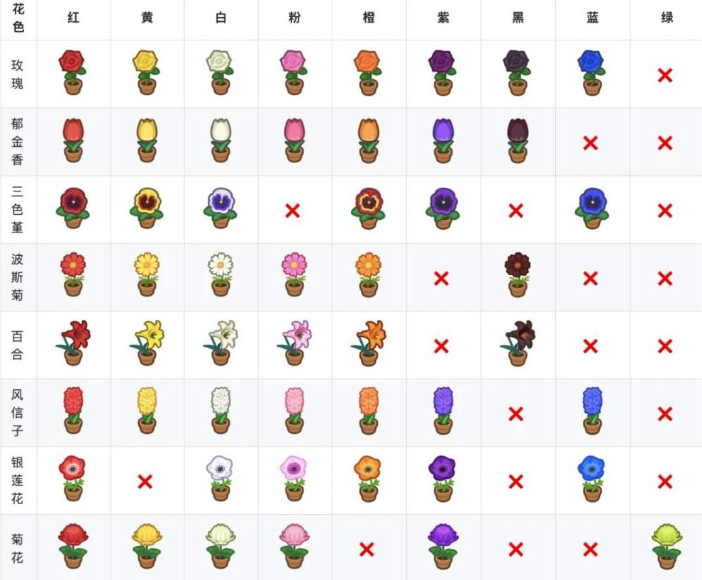
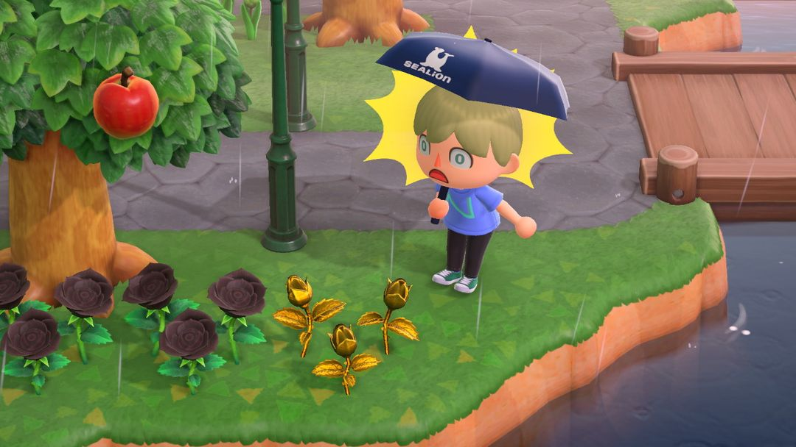
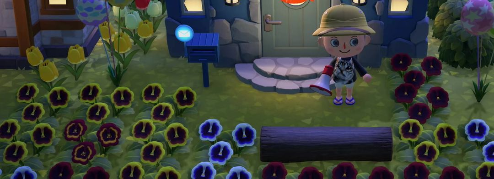
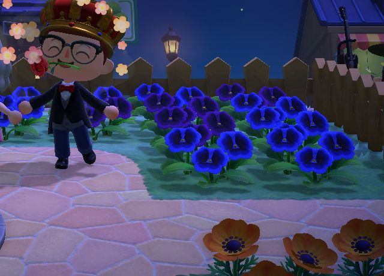

花卉杂交入门
只用商店种子，能配出粉、橙、紫、黑、蓝哪些颜色
商店里的花种子只有几种基础色，粉色、橙色、紫色、黑色、蓝色这些，都得靠岛上的花自己杂交出来。原理不复杂：同一种花挨着种下去，当天浇过水，第二天早上就可能在旁边的空地上冒出一株新花，颜色由两株父母决定。
刚开始玩杂交，最容易乱的是「这株新花到底是谁生的」。所以这篇只讲最稳的入门路线：父母一律用商店种子种出来的花，每组只放两株、四周留空，新花每天挪走。再叫上几个朋友来帮忙浇水，长新花的机会能从 5% 涨到 80%，进度会快很多。
01新花是怎么冒出来的
游戏里有 8 种花：玫瑰、郁金香、百合、风信子、波斯菊、三色堇、菊花、银莲花。想让它们长出新花，下面四个条件要同时满足。
第一，得是同一种花。玫瑰只跟玫瑰配，玫瑰和郁金香就算种在一起也互不影响。
第二，两株要挨着。一株花周围一圈 8 格里有同种的花，才有可能配成对。
第三，当天浇过水。浇过水的花第二天早上才有机会冒新花。碰上下雨、下雪的日子，等于老天替你把全岛都浇了一遍。
第四，旁边得有空地。新花只会长在空着的地面上，四周要是塞得满满当当，就算配对成功也长不出来。
还有一种情况：一株花周围没有同种的花，浇水以后也可能「复制」出一株同色的花。想多要几株某个颜色，就把它单独种在一边，每天浇水等它自己繁殖。
新花刚冒出来时是个花苞，跟你亲手种下的种子一样，要长几天才会开花，开了才看得出颜色。

8 种花分别有哪些颜色，打 × 的是这种花没有的颜色（金色玫瑰不在表里）（图：动物森友会攻略大合集 animalcrossing.top）
02浇水：叫朋友来帮忙
自己浇水只是让花「有机会」长新花，几率低得可怜。真正管用的是让别的岛的人来浇：同一株花被越多别的岛的访客浇过，第二天冒新花的机会越大，具体如下。
| 访客人数 | 长新花的机会 |
| 0（只有自己） | 5% |
| 1 | 25% |
| 2 | 35% |
| 3 | 50% |
| 4 | 65% |
| 5 及以上 | 80% |
哪怕只请来一位朋友，几率也从 5% 跳到 25%，差了五倍。凑齐 5 个人一起浇，几乎每一对父母第二天都有收获。想刷稀有颜色时，挑个大家都在线的晚上约一波，比自己天天浇划算得多。
注意浇完水当天别把花挖起来。花一挖，这一天浇的水就白费了，朋友帮你浇的那几遍也一起作废。
金色浇花壶
岛屿评价升到五星以后，西施惠会送你金色浇花壶的DIY手册，材料是浇花壶加金矿石。它一次能浇到前方 3×3 共 9 格，打理大片花圃时省下不少来回跑的工夫。不过按公开的几率表，几率只跟访客人数有关，换成金色浇花壶并不会让杂交几率变高。
它真正特别的地方在黑色玫瑰上：拿它浇过的黑色玫瑰，接下来长出的新花就是金色玫瑰。想要金色玫瑰，就得先配出黑色玫瑰，再拿这把壶去浇。

金色浇花壶浇过的黑玫瑰旁，冒出了金色玫瑰（图：Nookipedia）
03用种子花能直接配出哪些颜色
每株花身上都带着一套看不见的「基因」。同样是红花，商店种子种出来的和杂交出来的，基因可能不一样，拿去配对的结果也就不一样。偏偏从外表上完全看不出区别，所以新手当父母的花最好只用种子花，下面这张表也都是按种子花算的，照着配结果最稳。
| 花 | 红＋白 | 红＋黄 | 白＋白 | 红＋红 |
| 玫瑰 | 粉 | 橙 50% | 紫 25% | 黑 25% |
| 郁金香 | 粉 50% | 橙 50% | — | 黑 25% |
| 百合 | 粉 50% | 橙 50% | — | 黑 25% |
| 风信子 | 粉 50% | 橙 50% | 蓝 25% | — |
| 波斯菊 | 粉 100% | 橙 100% | — | — |
| 三色堇 | — | 橙 100% | 蓝 25% | — |
| 菊花 | 粉 100% | 黄 100% | 紫 25% | — |
表里的百分比，是配对成功以后长出这个颜色的机会；「—」表示这样配出不了新颜色，只会长出和父母一样的花。
表里没列的银莲花比较特别，它的种子是红、白、橙三色，没有黄色。用种子花配的话，红＋橙出粉 100%，白＋白出蓝 25%。
玫瑰和百合的红＋红，除了黑色，还有约四分之一会出粉色。玫瑰的红＋白也会混出别的颜色，粉色不一定一次就有，多配几次。
菊花的红＋黄长出来还是黄色，看着像白忙一场，其实不然：这株是「杂交黄」，和种子黄菊花的基因不同，下一代配紫菊、绿菊就靠它，记得单独收好。

门前的三色堇。红瓣带黄边的是橙色，游戏里叫「红黄三色堇」；蓝色那片用两株白花就能配出来
04再往下配一代
有些颜色光靠种子花配不出来，得拿杂交出来的花再配一次。这一代的几率低得多，一对父母可能要浇上好些天才见到一株，适合有朋友帮着浇水的时候慢慢刷。
紫郁金香：拿两株杂交出来的橙郁金香配，约 6% 出紫。
黑波斯菊：拿两株杂交出来的橙波斯菊配，约 6% 出黑。
蓝、紫风信子：两株杂交出来的橙风信子配，约 12% 出蓝；这样得到的蓝风信子再两两配，约四分之一出紫。紫风信子要走两步，先把蓝的攒出来。
紫三色堇、紫银莲花：先用种子红花配蓝花，得到一批「特殊红花」；再拿两株特殊红花配，约 6% 出紫。蓝花本身就是第一代杂交出来的，所以这一路要配三轮。
紫菊、绿菊：拿两株杂交出来的黄菊花配，约四分之一出紫，十六分之一出绿。上一节特意留下的「杂交黄」，就是用在这里。

喷泉边的蓝色、紫色三色堇，前面一排是橙色银莲花
至于蓝玫瑰，要隔好几代、从上百株里慢慢筛，入门阶段先放一放，等上面这些都配熟了再去琢磨。
05花圃怎么排才不乱
排花圃的原则就一条：一组只放一对父母，周围一圈全部留空，给新花留位置。一组大概是这个样子（□ 是空地）：
□□□□
□红白□
□□□□
这样排是为了让每株花只挨着一种颜色。一株花配对时会从身边随机挑一株，要是它同时挨着好几种颜色，长出来的新花就说不清是跟谁配的，表里的结果也就对不上了。
每天早上看到新花，当天就挖起来挪走，按颜色另种一片。留在原地的话，它会变成下一轮的父母，把这一组的结果搅乱，四周的空地也被它占掉一格。
不同品种之间不会互相干扰，所以玫瑰组和郁金香组可以穿插着挨在一起，能省下不少地方。
最后，给种子花做个记号。杂交出来的红花和种子红花长得一模一样，时间一长自己也记不清，在旁边放块石头或摆件标一下，以后挪花时就不会搞混。
063.0 之后：多出来的花能收进收纳
杂交刷久了，同色的花会越攒越多。3.0 以后收纳能扩到 9000 格，花、树苗和灌木都能放进去，多出来的花不用再扔，先收起来，等规划好花海再一口气种出来。

3.0 的收纳多了「植物」一栏，花、灌木和树都能收进去（英文版画面）（图：任天堂 3.0 宣传图，经 Nookipedia）
注意还在当父母的花就留在地里。同颜色的种子花和杂交花，收进收纳以后就分不出来了，混在一起再拿出来种，上面表里的组合就不准了。
动森圈圈 · 小程序和 iOS App 都搜「动森圈圈」